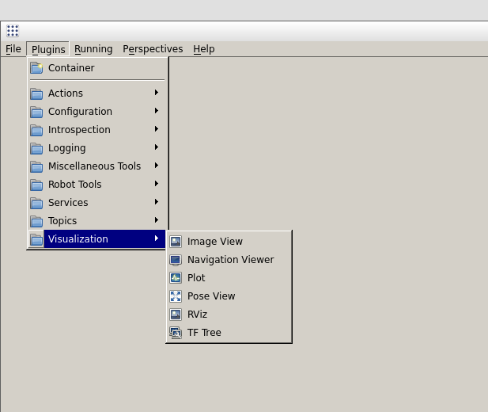
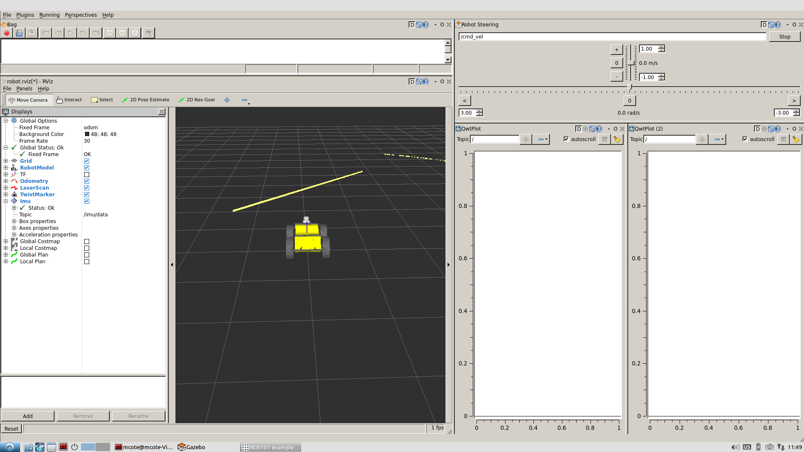
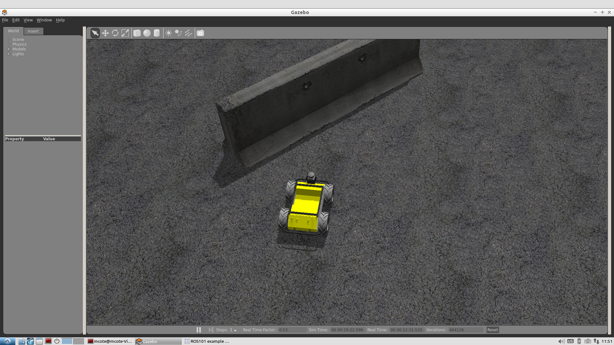
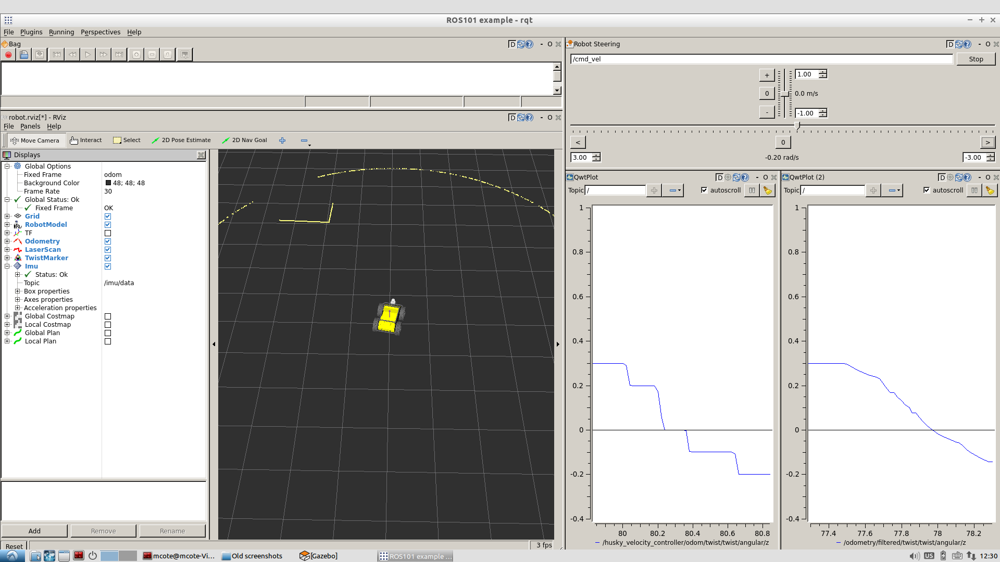
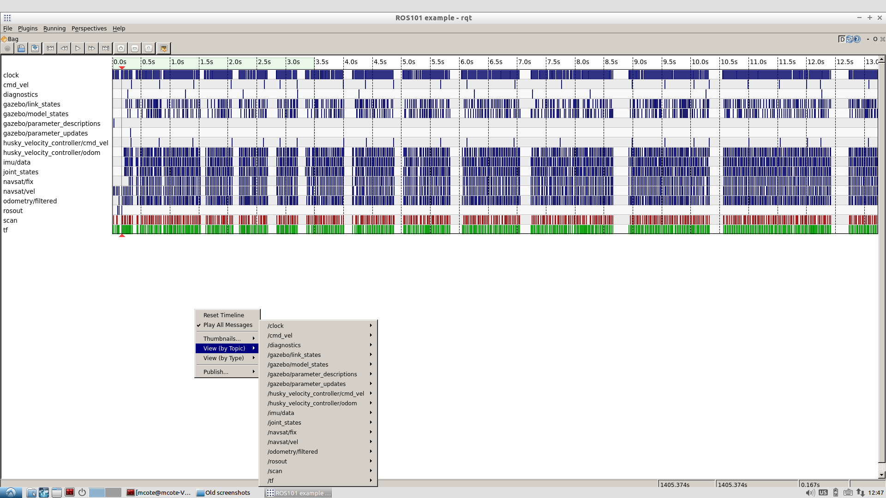

Creating a RQT Dashboard¶
After working in the terminal, gazebo and RViz, it’s time for a change of pace. For this tutorial we will be detailing the basics of creating your own rqt dashboard! A dashboard is a single rqt window with one or more plugins displayed in movable, resizable frames. Dashboards generally consist of a number of plugins that in combination provide a suite of UI capabilities for working with robots and robot data.
Dashboards can be populated and configured interactively in an rqt session. A preferred configuration can be saved as a “Perspective”, which saves the plugins loaded, their layout, and where supported, their settings and last-saved initial parameters (such as what topic we were last plotting). In this tutorial we will be working with the Husky simulation in ROS Indigo. To install ROS Indigo, please see these instructions, and visit our Husky page to install the Husky simulation.
Getting Started¶
The first step is to install rqt! We will also be installing some common plugins to create our dashboard
sudo apt-get install ros-indigo-rqt ros-indigo-rqt-common-plugins ros-indigo-rqt-robot-plugins
We can then launch RQT by simply using:
roscore
And then in a new terminal tab we can launch rqt
rqt
In the Plugins menu, select each plugin you want to load. You can change the layout by dragging and rescaling each plugin by its title bar or edges.
{kind=link}
A Practical Example¶
We’ll now create a rqt dashboard with a few useful plugins and demonstrate a potential use case for this particular dashboard. For this tutorial we’ll be using our virtual Husky to simulate sensor data. Open Husky up in Gazebo using:
roslaunch husky_gazebo husky_playpen.launch
You can mimize Gazebo for now as we set up our rqt dashboard. Begin by opening the following plugins from the plugins drop down menu, and re-size them as you like,
- Rviz
- Plot x2
- Bag
- Robot Steering
{kind=link}
Each plugin has their own uses and settings, for more information about a particular plugin, visit the rqt plugins page of the ROS Wiki.
When you’re happy with a dashboard configuration, you can save the perspective by selecting Perspectives > Create Perspective, giving it a name, and asking it to clone the current perspective. These perspectives are saved locally and persist between sessions.
To export a perspective for closer management such as sharing or persisting to a repository, select Perspectives > Export and give it a name with the filename extension, .perspective.
Loading a Perspective¶
A perspective can be loaded interactively in RQT by selecting Perspectives, import. However it’s useful to launch them directly from the command-line, which allows us to wrap them in a script that can be rosrun or roslaunched:
rqt --perspective-file "$(rospack find my_ros_rqt_package)/config/my_dashboard.perspective"
Some plugins allow you to configure options that impact its installation and behavior. For example, the Python Console plugin allows you to choose which console implementation to use. You can access these options for any plugin by selecting the gear icon in its title bar. If no gear icon is present, the plugin has not been configured to provide an options menu.
Rviz: To load Husky into your Rviz plugin, select open config from the drop down menu, and navigate to /opt/ros/indigo/share/husky_viz/rviz/view_robot.rviz. You should now see a model of Husky loaded in Rviz! By default, this config file will include the simulated laser, and you can see the object in Husky’s path in the Gazebo environment.
 {kind=link}
{kind=link}
Plot: The Plot tool is useful to plot a particular topic in real time, for this example we will be plotting the commanded odometery topic versus the simulated odometrey. In the input window on the top right of the plot plugin, add the follow topic in each plot.
/odometry/filtered/twist/twist/angular/z
and
/husky_velocity_controller/odom/twist/twist/angular/z
Robot Steering: The robot steering plugin provides us with a simple way to manually drive Husky, all that is required is to specify the topic which accepts the velocity commands to move your Robot, for our virtual Husky, that topic is /cmd_vel.
It’s time to put it together! Try commanding Husky to turn in place using the robot steering plugin, and watch your Husky is RViz spin in place while it’s updating the laser scan! You should also see the commanded odometry in one of your plots, while the actual odometry lags slightly behind as it catches up to the desired value.
{kind=link}
Rqt bag: Rosbag is an extremely useful tool for logging, and our support team may often ask for a bag file to take a closer look at your system. It’s possible to record a bag through the terminal, but using rqt is much simpler and more intuitive. Let’s record a bag file of Husky driving around by clicking the record button, and selecting the topics you want to record. Once you’re happy with the data recorded, stop the recording.
Playing a bag file back is just as simple. Let’s go ahead and close rqt and Gazebo so ROS is no longer running, then start ROS again with just roscore
roscore
And open rqt back up and load the ROS bag plugin again
rqt
This time we are going to open up the bag file we just recorded by clicking the 2nd button. You’ll now see all the topics that were recorded, and when messages were sent over that topic. You can take a closer look at a particular ticket by right clicking and selecting to view either the values or plot a particular topic.
{kind=link}
For more information regarding rqt, please visit the ROS Wiki page, if you have any questions regarding this particular tutorial, please don’t hesitate to contact us!